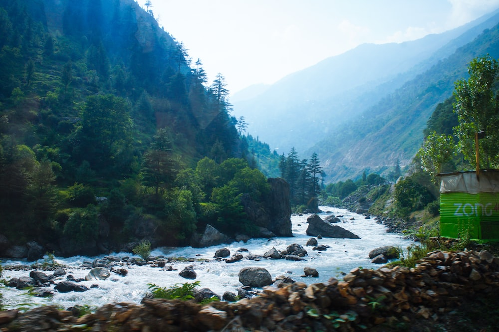
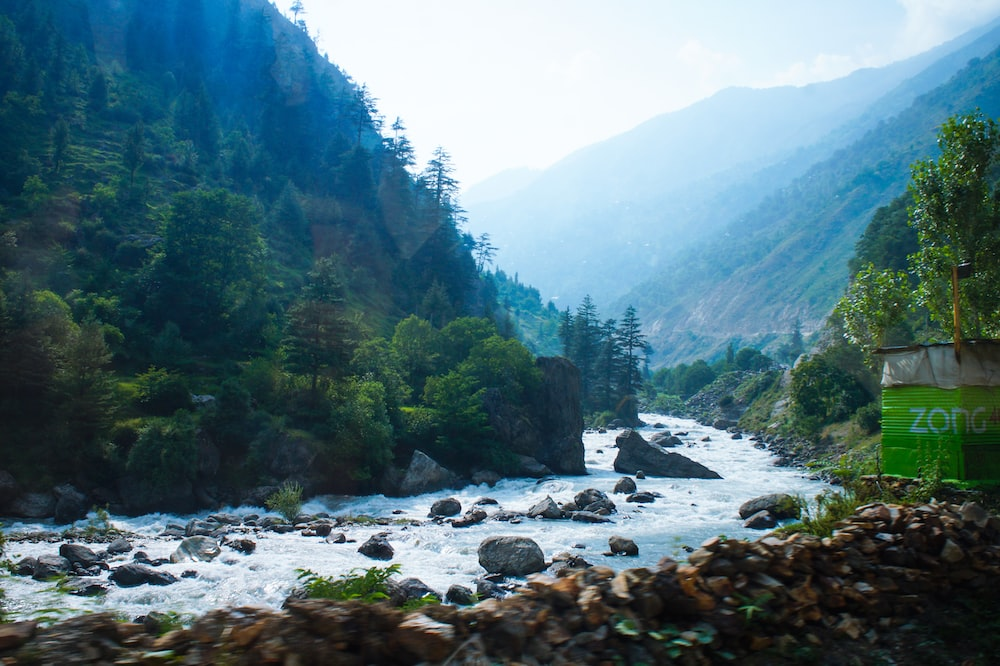

Naran is a town and popular tourist destination in upper Kaghan Valley in the Mansehra District of the Khyber Pakhtunkhwa province of Pakistan. It is located 119 kilometers (74 mi) from Mansehra city at the altitude of 2,409 meters (7,904 ft). It is located about 65 kilometers (40 mi) away from Babusar Top.It is one of the most popular tourist attraction locally as well as internationally.Naran valley is also Pakistan's most visited Valley, around 1.5 million people visit Naran valley every year.
Naran Kaghan is famous as a tourist destination, owing to its pleasant weather in peak season every year thousands of tourists rush to explore the valley. It is also the gateway to Gilgit Hunza in Summers by Babusar Pass. Naran Bazaar is very crowded in the summers with hotels and restaurants offering their services. In 2020, the government expects that 5 million tourists will explore the valley.
 
